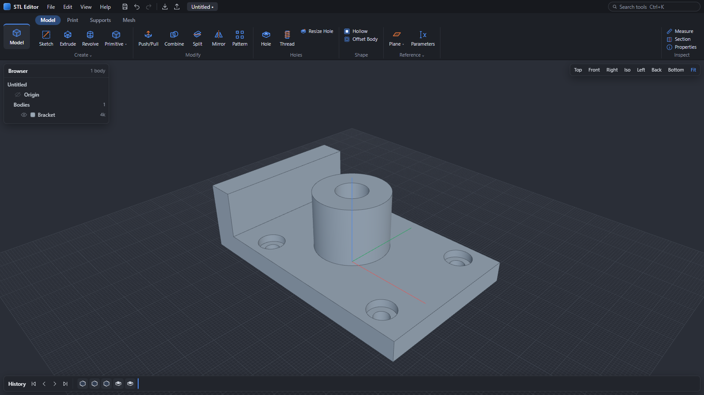
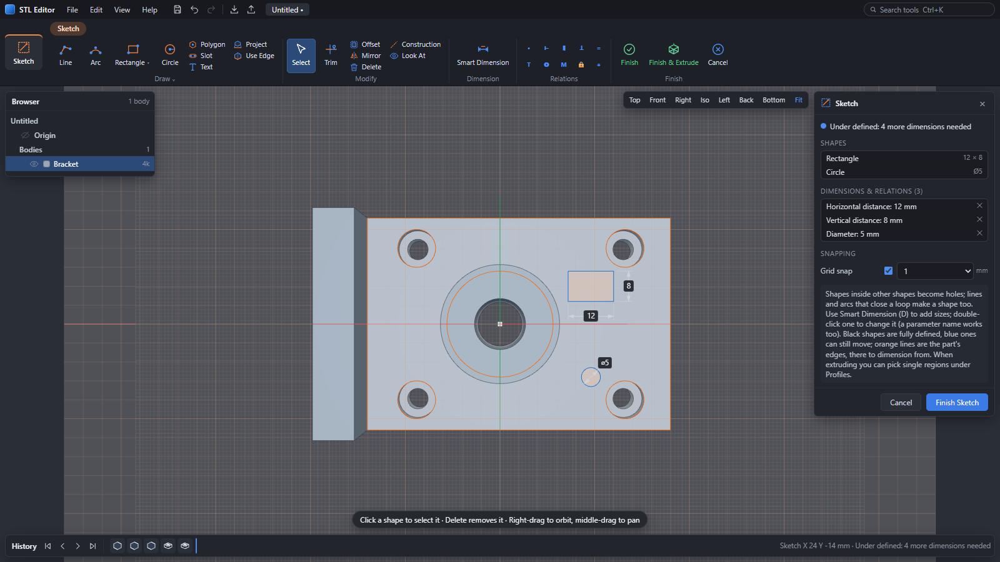
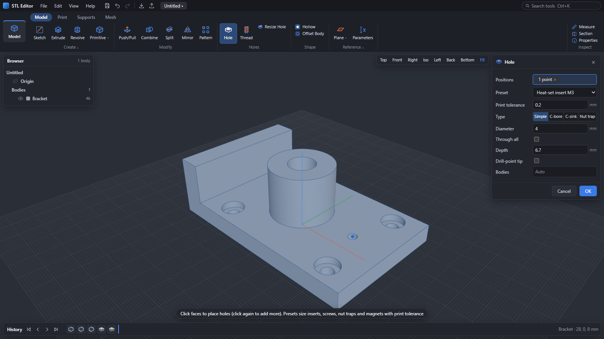
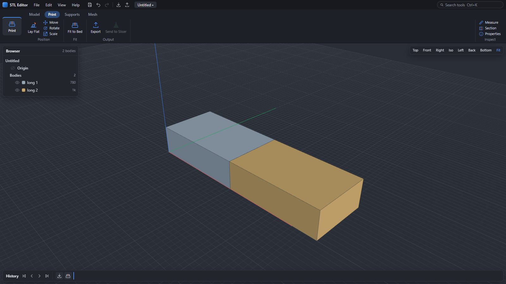
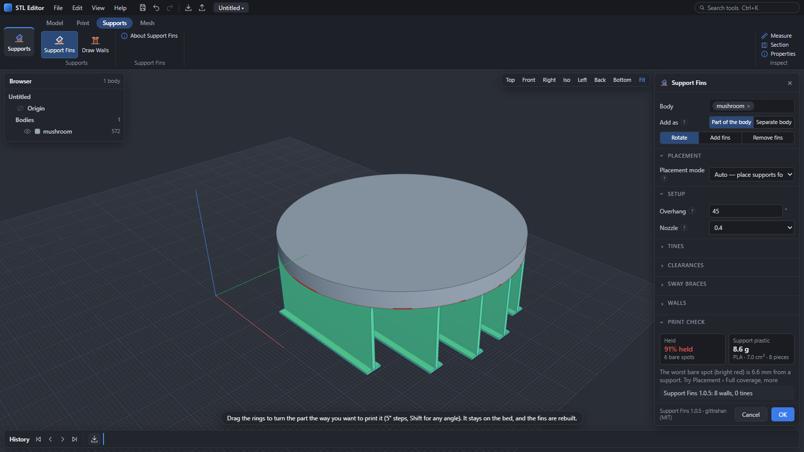
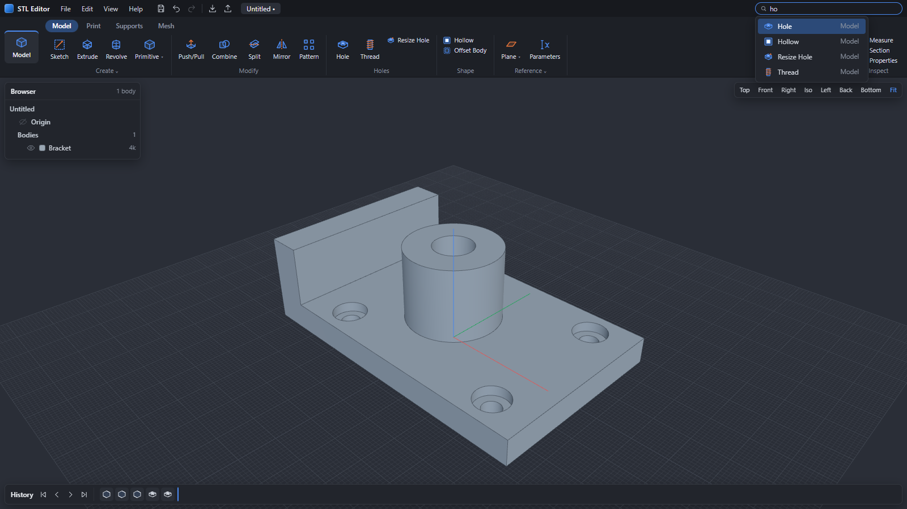

Sketch on flat faces, drill holes for hardware, add printable threads, and split parts to fit your 3D printer—directly on the mesh.

Downloaded files don't have to be dead triangles. Fix sizing issues, drop in fasteners, and prep models for printing without starting from scratch in CAD.
Found a great design online but need it to fit your exact project? Double-click any flat face on your mesh to sketch, cut pockets, or extrude new geometry. Add standard screw holes, heat-set inserts, or magnet pockets with built-in printing clearance, or generate real threads that screw together smoothly.


Never pass on a great model just because it exceeds your printer's build volume. Pick your printer or type your bed size, and STL Editor slices oversized models into clean pieces that fit. It automatically places alignment pins, pin holes, filament dowels, or magnet pockets at every seam so parts align effortlessly during assembly.

Tired of slicer tree supports fusing to delicate overhangs and requiring pliers to chisel off? STL Editor includes built-in Support Fins. Add rigid breakaway support walls and bed pads directly to the mesh. Overhang coverage checks highlight unreached areas in bright red, so you catch failures before wasting filament.

No digging through endless sub-menus or navigating confusing multi-tier ribbons. All tools are clearly organized into four main tabs: Model, Print, Supports, and Mesh. Press Ctrl+K anytime, type the tool you need, and jump straight into action.

Everything runs directly on your hardware without logins, tracking, or cloud lock-in.
No logins, no sign-ups, no monthly fees, and no telemetry. Open the web version or launch the portable Windows executable and start modifying models instantly. 100% free and open-source under GPL-3.0.
Your 3D models and proprietary designs never leave your computer. Both the Windows desktop app and the web edition execute all geometry operations locally using fast WebAssembly and C++ Manifold kernels.
Every sketch, cut, hole, thread, and split is recorded in an editable parametric timeline. Double-click any earlier step, adjust a dimension or parameter, and all downstream operations rebuild automatically without starting over.
All the modeling, print preparation, support, and mesh repair tools included out of the box.
Single zip download with zero installation required, or run the full WebAssembly version directly online.
Pre-packaged portable executable. Extract anywhere (Desktop, Documents, or USB drive) and run immediately without administrator privileges.
| OS | Windows 10 or 11 (64-bit) |
| Disk Space | ~150 MB unzipped |
| Input | STL, 3MF, OBJ, PLY, OFF, GLB/glTF, .stlx |
| Output | STL, 3MF, OBJ |
| Slicers | Bambu Studio, OrcaSlicer, PrusaSlicer |
Works in any modern browser (Chrome, Edge, Firefox, Safari) on Windows, macOS, Linux, ChromeOS, and tablets. Runs completely offline once loaded.
Quick answers about privacy, pricing, and how STL Editor compares to traditional tools.